| Haresh Gupta | 23b0931 |
| Yash Singh | 23b0934 |
| Sai Divya Teja | 24b1016 |
| Shivam Singh Yadav | 23b1007 |
./build_champsim.sh no lru). SRRIP (rrip.l2c_repl) is shown as a second reference because I-RRIP is built on it.L2C LOAD MPKI, L2C INSTRUCTION LOAD MPKI and L2C DATA LOAD MPKI (instruction + data = load);
L1D accuracy = useful / prefetches issued to the next level; L1D coverage = (Mb − Mp) / Mb over L1D load misses.
Averages over the traces: geometric mean for IPC and speedup, arithmetic mean otherwise.update_replacement_state now has a ninth parameter
uint8_t isInstruction. It was added to the function-pointer type and all declarations in inc/cache.h, to every
replacement file, and to all 11 call sites, which pass the instruction field of the packet that causes the update
(MSHR entry on a fill, RQ/WQ/PQ entry on a hit). The policy treats a line as an instruction line when
isInstruction is set and the request is a LOAD or PREFETCH; this is exactly the rule
fill_cache() uses for BLOCK::instruction and the rule behind the L2 instruction MPKI statistic.PAGE_TABLE_WALKER::handle_page_fault() is declared uint64_t but had no
return. GCC ≥ 8 treats the end of such a function as unreachable, and the unmodified repository built with
GCC 11 crashes after a few thousand instructions; we added return 0; (all callers ignore the value).
(2) The single-core path of main.cc never called l2c_replacement_final_stats(); we added the call so the policy
can print its decision statistics. Neither change affects timing.scripts/experiments.sh. Policy parameters are
compile-time macros whose defaults are the chosen values; a sweep point is built by scripts/build.sh as a two-line wrapper that
#defines the macro and #includes the policy file.prefetcher/spp.l1d_pref, SPP-Final) unchanged. Tasks 2 and 3 were
compiled with GCC 11 under WSL; Task 1 used GCC 7 in Docker. This shifts the absolute numbers slightly: the baseline IPC is
0.2321 / 0.2499 / 0.3820 here and 0.2322 / 0.2511 / 0.3821 in Task 1, and the speedup of SPP is 1.0083 / 1.0135 / 1.0126 here and 1.0098 / 1.0133 / 1.0128 in
Task 1. Every comparison inside Tasks 2 and 3 uses the same build, so these comparisons are consistent.An L1D miss that hits in the L2 costs about 10 extra cycles, and the out-of-order core can overlap much of that latency with independent work (the ROB has 352 entries). An L1I miss stalls the fetch unit: no new instructions enter the pipeline until the line arrives, so its latency adds almost directly to execution time. Our traces have large code footprints; even with SRRIP the L2 instruction load MPKI is 10.55, 19.32 and 1.20, i.e. 71% of all L2 load misses on Trace2. Keeping instruction lines in the L2 turns expensive front-end stalls into short L2 hits, and the cost is extra data misses, which are partly hidden by the core.
I-RRIP keeps the SRRIP hardware: a 2-bit re-reference prediction value (RRPV) per line, a victim is a line with RRPV 3, and if no line has RRPV 3 all lines of the set age by one. It changes all three parts of the policy:
| Part | SRRIP | I-RRIP |
|---|---|---|
| Insertion | every line at RRPV 2 | instruction line at RRPV 0, data line at RRPV 3 |
| Promotion | every hit → RRPV 0 | instruction and data demand hits → RRPV 0; a writeback hit does not promote |
| Eviction | first line (lowest way) with RRPV 3 | among lines with RRPV 3, a data line before an instruction line |
Hardware cost over SRRIP: one instruction bit per line (8192 bits for the 512 KB L2; ChampSim already keeps it in
BLOCK::instruction). The other changes are only different constants and one extra comparison in the victim search.
We changed one part at a time, starting from SRRIP, and kept a change only if it raised the geometric-mean speedup by more than 0.05% (smaller gaps are ties; with three traces we cannot separate them from noise, the same rule as in Task 1). Table 1 lists every variant, Figure 1 shows the geometric-mean speedups.
| Name | Instr. insert | Data insert | Data hit | WB hit | Victim | Speedup T1 | Speedup T2 | Speedup T3 | Geomean | L2 instr. MPKI (mean) | L2 data MPKI (mean) |
|---|---|---|---|---|---|---|---|---|---|---|---|
| SRRIP | 2 | 2 | →0 | →0 | first at 3 | 0.9996 | 1.0020 | 0.9990 | 1.0002 | 10.36 | 5.95 |
| A1 | 1 | 2 | →0 | →0 | first at 3 | 1.0004 | 1.0064 | 0.9996 | 1.0021 | 9.90 | 6.18 |
| A2 | 0 | 2 | →0 | →0 | first at 3 | 0.9996 | 1.0097 | 0.9998 | 1.0030 | 9.65 | 6.37 |
| A3 | 1 | 3 | →0 | →0 | first at 3 | 0.9974 | 1.0201 | 0.9998 | 1.0057 | 8.19 | 7.26 |
| A4 | 0 | 3 | →0 | →0 | first at 3 | 0.9970 | 1.0216 | 1.0000 | 1.0061 | 8.07 | 7.39 |
| P1 | 0 | 2 | −1 | →0 | first at 3 | 0.9992 | 1.0136 | 1.0001 | 1.0043 | 9.18 | 6.55 |
| P2 | 0 | 3 | −1 | →0 | first at 3 | 0.9964 | 1.0238 | 1.0015 | 1.0072 | 7.70 | 7.61 |
| P3 | 0 | 2 | →0 | none | first at 3 | 0.9990 | 1.0138 | 1.0004 | 1.0044 | 9.16 | 6.44 |
| P4 | 0 | 3 | →0 | none | first at 3 | 0.9974 | 1.0267 | 1.0046 | 1.0095 | 7.71 | 7.56 |
| P5 | 0 | 3 | −1 | none | first at 3 | 0.9963 | 1.0269 | 1.0059 | 1.0096 | 7.50 | 7.80 |
| E1 | 0 | 2 | →0 | →0 | data first | 0.9989 | 1.0162 | 0.9999 | 1.0050 | 9.01 | 6.57 |
| E2 | 0 | 3 | →0 | →0 | data first | 0.9961 | 1.0225 | 1.0000 | 1.0061 | 7.70 | 7.71 |
| E3 | 0 | 2 | →0 | none | data first | 0.9987 | 1.0188 | 1.0004 | 1.0059 | 8.65 | 6.62 |
| I-RRIP | 0 | 3 | →0 | none | data first | 0.9962 | 1.0276 | 1.0050 | 1.0095 | 7.44 | 7.91 |
| E4 | 0 | 3 | −1 | none | data first | 0.9956 | 1.0271 | 1.0061 | 1.0095 | 7.44 | 7.91 |
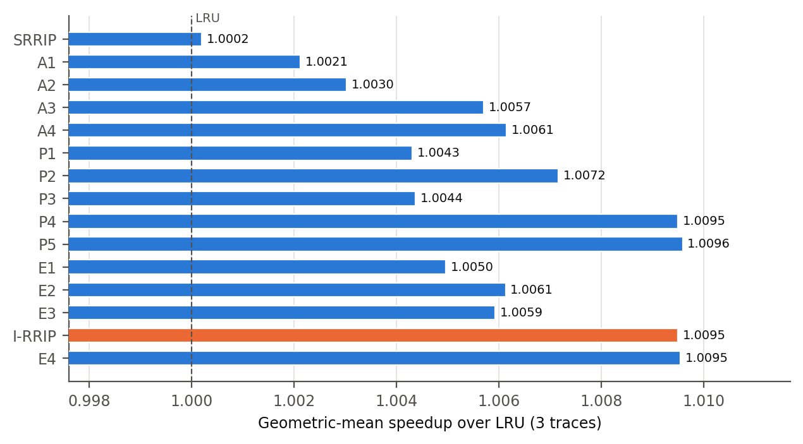
Insertion. Inserting instruction lines at RRPV 0 instead of 2 (A2: +0.30%) gives them two extra aging rounds before they can be evicted; RRPV 1 (A1: +0.21%) protects them less and is worse. The larger step is inserting data at RRPV 3 (A4: +0.61%, A3: +0.57%): a new data line is then the first victim of its set unless it is reused before the next miss. Most L2 data lines are not reused before eviction (the L2 load hit rate of SRRIP is only 30%, 49% and 27%), so distant insertion removes little useful data and gives the instruction lines the room. Both changes are kept: instruction at 0, data at 3.
Promotion. Two promotion changes were tested. (i) Promoting a data hit only one step (P1, P2) instead of to RRPV 0 helps a little on its own (A4 → P2: +0.61% → +0.72%). (ii) Not promoting on a writeback hit is the most important single change (A4 → P4: +0.61% → +0.95%). Writebacks are dirty lines evicted from the L1D; they are 11–25% of all L2 accesses and over 92% of them hit in the L2 (the line is still there from its fill). Under SRRIP each such hit moves a data line to RRPV 0, i.e. the line the L1D has just thrown away gets the highest priority in the L2, ahead of every instruction line. A writeback is not a reuse by the core, so it should not change the prediction. Once writebacks no longer promote, the partial data promotion gives nothing more (P4 +0.95% vs P5 +0.96%, a tie), so demand hits keep the SRRIP rule (→ RRPV 0): a data line that is really reused deserves to stay, and the simpler rule is kept.
Eviction. Choosing a data line before an instruction line among the RRPV-3 candidates matters when both kinds age to RRPV 3 together, which is common when data is inserted at 2 (A2 → E1: +0.30% → +0.50%). With data inserted at 3, most RRPV-3 lines are already data lines, and the gain in speedup is a tie (P4 +0.95% vs I-RRIP +0.95%). We keep it because it is the only part that protects an old instruction line, and it further lowers the L2 instruction MPKI, the stated goal of the task (Trace2: 12.98 → 12.33), at no extra cost beyond the instruction bit.
Why this combination is the best of the variants. Every part is aimed at the same effect, keeping instruction lines and dropping data that is not reused, and each part was checked against the variant without it. The submitted I-RRIP has the highest geometric-mean speedup together with P4/P5/E4 (all within 0.01%) and, with E4, the lowest mean L2 instruction MPKI among them; E4 adds the partial data promotion without any gain, so the simpler I-RRIP is submitted. The price is visible on Trace1, the trace whose data is reused in the L2: its data MPKI rises from 7.06 to 9.63 and its speedup falls to 0.9962. Task 2B fixes this.
| Configuration | IPC | Speedup | L2C load MPKI | L2 instr. load MPKI | L2 data load MPKI |
|---|---|---|---|---|---|
| Trace1 | |||||
| LRU (baseline) | 0.2321 | 1.0000 | 17.70 | 10.37 | 7.33 |
| SRRIP | 0.2320 | 0.9996 | 17.61 | 10.55 | 7.06 |
| I-RRIP | 0.2312 | 0.9962 | 18.88 | 9.25 | 9.63 |
| Trace2 | |||||
| LRU (baseline) | 0.2499 | 1.0000 | 28.64 | 20.14 | 8.50 |
| SRRIP | 0.2504 | 1.0020 | 27.27 | 19.32 | 7.95 |
| I-RRIP | 0.2568 | 1.0276 | 23.25 | 12.33 | 10.92 |
| Trace3 | |||||
| LRU (baseline) | 0.3820 | 1.0000 | 3.96 | 1.12 | 2.84 |
| SRRIP | 0.3816 | 0.9990 | 4.04 | 1.20 | 2.85 |
| I-RRIP | 0.3839 | 1.0050 | 3.90 | 0.73 | 3.17 |
| Average (geometric mean for IPC and speedup, arithmetic mean otherwise) | |||||
| LRU (baseline) | 0.2809 | 1.0000 | 16.77 | 10.54 | 6.22 |
| SRRIP | 0.2809 | 1.0002 | 16.31 | 10.36 | 5.95 |
| I-RRIP | 0.2836 | 1.0095 | 15.34 | 7.44 | 7.91 |
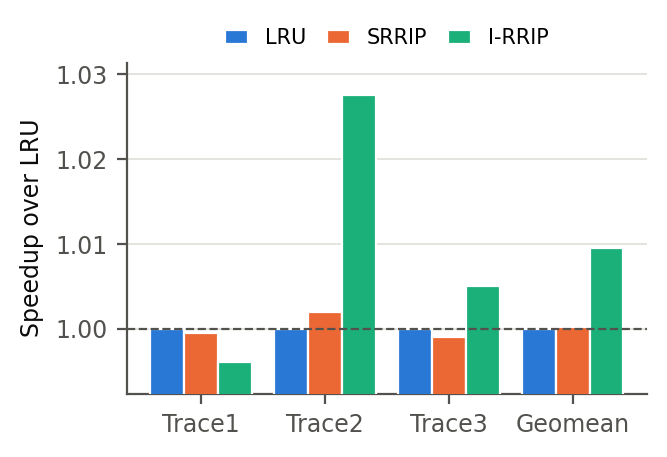
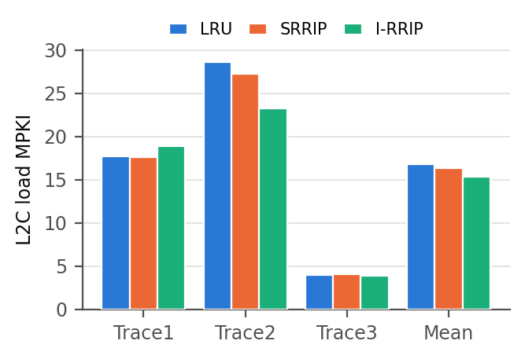
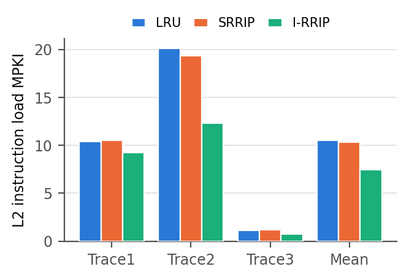
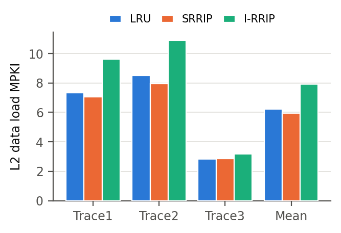
I-RRIP lowers the mean L2 instruction load MPKI from 10.36 (SRRIP) to 7.44 (28% fewer instruction misses) and raises the data load MPKI from 5.95 to 7.91. On Trace2, where instructions cause most L2 misses, this is a +2.76% speedup over LRU and the total L2 load MPKI also falls. On Trace3 the instruction misses almost disappear (1.20 → 0.73). On Trace1 the extra data misses outweigh the saved instruction misses.
replacement/dyn_irrip.l2c_repl uses set dueling. A few leader sets always run SRRIP, and in the final design
an equal number of leader sets always run I-RRIP; all other sets (followers) use the policy that is currently winning.
Leader sets are chosen by complement-select: the 1024 sets are split into N constituencies of 1024/N sets, and in constituency
k the set with offset k is an SRRIP leader and the set with offset (1024/N−1−k) an I-RRIP leader.
This spreads the leaders over the whole index range, so they do not line up with power-of-two strides of the program.
In the leader sets the policy counts instruction and data (non-instruction) demand accesses and misses (writebacks are
excluded). Two decision rules were implemented (DYN_MODE):
DYN_EPOCH = 1024 leader accesses the followers use I-RRIP if ratio > T, then the four counters are halved so
that old program phases fade out. The ratio is measured in SRRIP sets on purpose: in I-RRIP sets the policy we are judging would already
have removed instruction misses and biased the measurement.| Threshold | Speedup Trace1 | Speedup Trace2 | Speedup Trace3 | Geomean speedup | Fraction I-RRIP (T1/T2/T3) | Mean ratio (T1/T2/T3) |
|---|---|---|---|---|---|---|
| T = 5% | 0.9962 | 1.0265 | 1.0048 | 1.0091 | 1.00 / 1.00 / 1.00 | 0.44 / 0.61 / 0.31 |
| T = 10% | 0.9962 | 1.0231 | 1.0047 | 1.0079 | 1.00 / 0.98 / 1.00 | 0.44 / 0.61 / 0.31 |
| T = 15% | 0.9962 | 1.0230 | 1.0045 | 1.0079 | 1.00 / 0.98 / 0.86 | 0.44 / 0.61 / 0.31 |
| T = 20% | 0.9960 | 1.0226 | 0.9994 | 1.0059 | 1.00 / 0.96 / 0.57 | 0.44 / 0.61 / 0.31 |
| T = 25% | 0.9960 | 1.0226 | 0.9985 | 1.0056 | 1.00 / 0.96 / 0.43 | 0.44 / 0.61 / 0.31 |
| T = 30% | 0.9958 | 1.0219 | 0.9986 | 1.0053 | 1.00 / 0.94 / 0.43 | 0.44 / 0.61 / 0.31 |
| T = 40% | 0.9964 | 1.0218 | 0.9987 | 1.0056 | 0.85 / 0.92 / 0.29 | 0.44 / 0.61 / 0.31 |
| T = 50% | 0.9992 | 1.0211 | 0.9989 | 1.0063 | 0.04 / 0.90 / 0.29 | 0.44 / 0.61 / 0.31 |
| T = 60% | 0.9985 | 1.0182 | 0.9990 | 1.0052 | 0.00 / 0.82 / 0.00 | 0.45 / 0.61 / 0.31 |
| T = 70% | 0.9985 | 1.0027 | 0.9990 | 1.0001 | 0.00 / 0.00 / 0.00 | 0.45 / 0.61 / 0.31 |
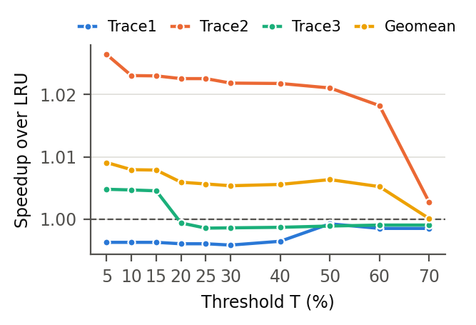
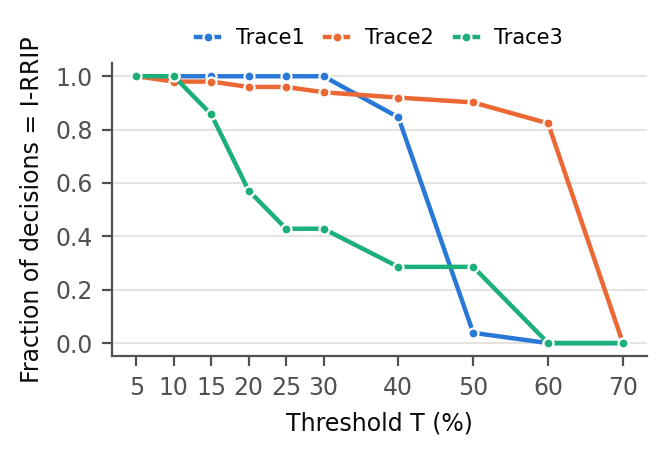
The measured ratio is stable per trace: about 0.44 on Trace1, 0.61 on Trace2 and 0.31 on Trace3. Low thresholds (T ≤ 15%) choose I-RRIP almost always and match static I-RRIP; T = 70% never chooses it and equals SRRIP. In between, the switch happens in the order Trace3, Trace1, Trace2, because that is the order of their ratios. But the traces need the opposite for Trace1 and Trace3: Trace3 gains from I-RRIP (+0.50%) although only about 31% of its leader traffic is instruction traffic, and Trace1 loses (-0.38%) although 44% is. A threshold between the two ratios (T = 30–40%) gives Trace3 SRRIP and Trace1 I-RRIP, the worst assignment. T = 50% gets Trace1 right but still takes I-RRIP away from Trace3. The best threshold is the lowest (T = 5%, +0.91%), i.e. the formula is best when it does nothing.
The reason: the ratio measures how much of the L2 traffic is instruction traffic, not whether protecting it pays off. That depends on what the protection costs: on Trace1 the data has L2 reuse, and moving data insertion to RRPV 3 adds 2.57 data MPKI while removing only 1.30 instruction MPKI. To decide correctly the policy has to measure the effect of I-RRIP itself, which is what set dueling with I-RRIP leader sets does.
| Instr. miss weight | Speedup Trace1 | Speedup Trace2 | Speedup Trace3 | Geomean speedup | Fraction I-RRIP (T1/T2/T3) |
|---|---|---|---|---|---|
| W = 1 | 0.9993 | 1.0268 | 0.9994 | 1.0084 | 0.00 / 1.00 / 0.00 |
| W = 1.5 | 0.9993 | 1.0267 | 1.0012 | 1.0090 | 0.00 / 1.00 / 0.86 |
| W = 2 | 0.9993 | 1.0268 | 1.0048 | 1.0102 | 0.00 / 1.00 / 1.00 |
| W = 3 | 0.9991 | 1.0267 | 1.0048 | 1.0101 | 0.04 / 1.00 / 1.00 |
| W = 4 | 0.9965 | 1.0267 | 1.0048 | 1.0092 | 0.88 / 1.00 / 1.00 |
| W = 8 | 0.9962 | 1.0267 | 1.0048 | 1.0092 | 1.00 / 1.00 / 1.00 |
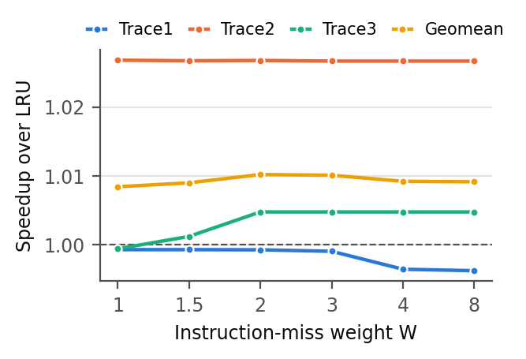
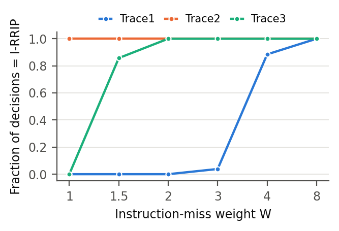
| Weight | 16 + 16 leader sets | 32 + 32 leader sets | 64 + 64 leader sets |
|---|---|---|---|
| W = 1 | 1.0104 0.00 / 1.00 / 1.00 ✓ | 1.0084 0.00 / 1.00 / 0.00 | 1.0095 1.00 / 1.00 / 1.00 |
| W = 1.5 | 1.0104 0.00 / 0.96 / 1.00 ✓ | 1.0090 0.00 / 1.00 / 0.86 ✓ | 1.0095 1.00 / 1.00 / 1.00 |
| W = 2 | 1.0093 0.93 / 1.00 / 1.00 | 1.0102 0.00 / 1.00 / 1.00 ✓ | 1.0095 1.00 / 1.00 / 1.00 |
| Variant (mode 1, W = 2, 32 + 32 leaders unless stated) | Speedup Trace1 | Speedup Trace2 | Speedup Trace3 | Geomean speedup | Fraction I-RRIP (T1/T2/T3) |
|---|---|---|---|---|---|
| epoch 256 | 0.9986 | 1.0268 | 1.0048 | 1.0100 | 0.00 / 1.00 / 1.00 |
| epoch 1024 (submitted) | 0.9993 | 1.0268 | 1.0048 | 1.0102 | 0.00 / 1.00 / 1.00 |
| epoch 4096 | 0.9993 | 1.0267 | 1.0048 | 1.0102 | 0.00 / 1.00 / 1.00 |
| W = 1, epoch 256 | 0.9986 | 1.0268 | 0.9994 | 1.0082 | 0.00 / 1.00 / 0.00 |
| W = 1, epoch 1024 | 0.9993 | 1.0268 | 0.9994 | 1.0084 | 0.00 / 1.00 / 0.00 |
| W = 1, epoch 4096 | 0.9993 | 1.0268 | 0.9994 | 1.0084 | 0.00 / 1.00 / 0.00 |
| mode 0, T = 25%, epoch 256 | 0.9957 | 1.0229 | 0.9986 | 1.0057 | 1.00 / 0.95 / 0.36 |
| mode 0, T = 25%, epoch 1024 | 0.9960 | 1.0226 | 0.9985 | 1.0056 | 1.00 / 0.96 / 0.43 |
| mode 0, T = 25%, epoch 4096 | 0.9962 | 1.0265 | 1.0048 | 1.0091 | 1.00 / 1.00 / 1.00 |
Weight. With W = 1 (a plain miss count) and 32 + 32 leaders the duel picks SRRIP for Trace1 and I-RRIP for Trace2, but also SRRIP for Trace3, whose two policies differ by only a few misses. W = 2 picks I-RRIP for Trace3 as well and gives +1.02%. W = 3 is a tie (+1.01%); W = 4 and 8 over-value instruction misses and choose I-RRIP for Trace1 again. W = 2 also has a physical meaning: an instruction miss stalls fetch while the core overlaps part of a data miss with other work, so an instruction miss costs roughly twice as much.
Leader sets and weight together (Table 5). The leaders are a sample of the cache, and on Trace1 and Trace3 the two policies are close: on Trace1 I-RRIP adds about 2.5 data MPKI and removes about 1.2 instruction MPKI, so with W = 2 the weighted misses of the two leader groups are almost equal. Which policy wins then depends on which sets are sampled, and neighbouring cells of the grid disagree on Trace1 or Trace3. Three settings choose the best policy on every trace (marked ✓): 16 + 16 leaders with W = 1 or 1.5, and 32 + 32 leaders with W = 2. They are within 0.02% of each other, a tie. We submit 32 + 32 leaders with W = 2: 32 leader sets per policy (6.25% of the 1024 sets together) is the size used by DIP for caches of this size, and it halves the sampling noise of 16 sets (the standard error of a sampled miss rate falls with the square root of the number of sets). 64 + 64 leaders run 12.5% of the cache with a fixed policy, and in our runs they also led to I-RRIP on Trace1. A wrong choice is cheap on these traces: the worst cell of the grid is +0.84%, still better than SRRIP (+0.02%) and close to static I-RRIP (+0.95%), because the duel is only unsure where the two policies are close.
Epoch (Table 6). PSEL integrates continuously; the epoch only sets how often the followers read it. Trace3 sends few requests to the L2, so with 1024 it makes only 7 decisions in 25M instructions, which is still enough because its preference does not change. For the duel all three epochs give the same decisions (within 0.02%). For mode 0 the epoch changes which phases are sampled, but no epoch makes the formula choose the right policies.
| Configuration | IPC | Speedup | L2C load MPKI | L2 instr. load MPKI | L2 data load MPKI |
|---|---|---|---|---|---|
| Trace1 | |||||
| LRU (baseline) | 0.2321 | 1.0000 | 17.70 | 10.37 | 7.33 |
| SRRIP | 0.2320 | 0.9996 | 17.61 | 10.55 | 7.06 |
| I-RRIP | 0.2312 | 0.9962 | 18.88 | 9.25 | 9.63 |
| Dyn-I-RRIP | 0.2320 | 0.9993 | 17.68 | 10.54 | 7.14 |
| Trace2 | |||||
| LRU (baseline) | 0.2499 | 1.0000 | 28.64 | 20.14 | 8.50 |
| SRRIP | 0.2504 | 1.0020 | 27.27 | 19.32 | 7.95 |
| I-RRIP | 0.2568 | 1.0276 | 23.25 | 12.33 | 10.92 |
| Dyn-I-RRIP | 0.2566 | 1.0268 | 23.33 | 12.53 | 10.79 |
| Trace3 | |||||
| LRU (baseline) | 0.3820 | 1.0000 | 3.96 | 1.12 | 2.84 |
| SRRIP | 0.3816 | 0.9990 | 4.04 | 1.20 | 2.85 |
| I-RRIP | 0.3839 | 1.0050 | 3.90 | 0.73 | 3.17 |
| Dyn-I-RRIP | 0.3838 | 1.0048 | 3.91 | 0.75 | 3.16 |
| Average (geometric mean for IPC and speedup, arithmetic mean otherwise) | |||||
| LRU (baseline) | 0.2809 | 1.0000 | 16.77 | 10.54 | 6.22 |
| SRRIP | 0.2809 | 1.0002 | 16.31 | 10.36 | 5.95 |
| I-RRIP | 0.2836 | 1.0095 | 15.34 | 7.44 | 7.91 |
| Dyn-I-RRIP | 0.2838 | 1.0102 | 14.97 | 7.94 | 7.03 |
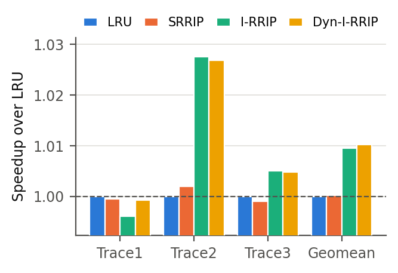
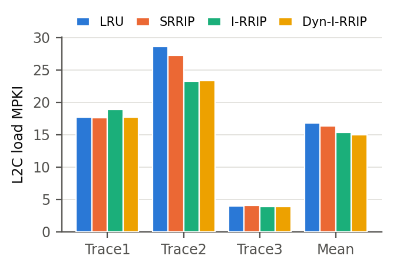
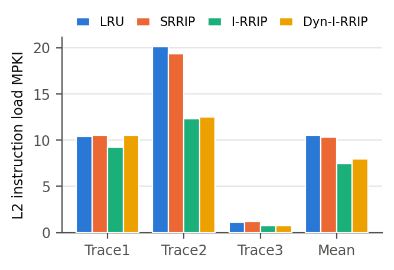
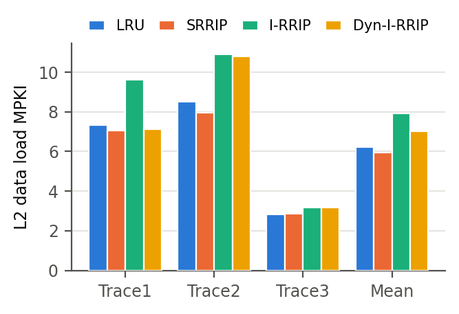
Dynamic I-RRIP keeps the gains of I-RRIP where they exist (Trace2 +2.68%, Trace3 +0.48%) and follows SRRIP on Trace1 (-0.07% instead of -0.38% with static I-RRIP), so it beats both SRRIP and I-RRIP in geometric mean (+1.02% vs +0.02% and +0.95%). Trace1’s data load MPKI goes back to the SRRIP level (7.14).
Storage. On top of SRRIP (2-bit RRPV per line, 16384 bits): the instruction bit per line (8192 bits), a 10-bit PSEL, a 10-bit epoch counter and the 1-bit follower mode, 8213 bits ≈ 1.0 KiB in total. Leader sets are identified by comparing two 5-bit fields of the set index, so no table is needed. (Mode 0 instead needs four 16-bit counters, 64 bits, instead of PSEL.)
SPP (Task 1) runs at the L1D. Each prefetch first looks up the L1D; on a miss it goes to the L2 as a request of type
PREFETCH, and if it misses there too, the line is filled into the L2 on its way to the L1D (SPP fills the L1D when less than
half of the L1D MSHRs are busy, otherwise only the L2). The replacement policy therefore sees three new events: a prefetch fill, a
prefetch request that hits a line already in the L2, and later perhaps a demand hit on a line that a prefetch brought in
(BLOCK::prefetch is still set; the cache clears it right after calling the policy).
The policy counts these events. On the three traces only 2.3% / 0.8% / 0.9% of the prefetched lines filled into the L2 ever receive a demand hit at the L2 (columns pf fills and first use below, counted over warm-up and simulation): the useful prefetches are consumed in the L1D, and the L2 copy is a duplicate that the program will not ask the L2 for again unless the L1D loses it first.
The prefetch handling is part of replacement/dyn_irrip.l2c_repl (DYN_PF_AWARE, on by default). It applies to
data prefetches in all sets, in both follower modes:
None of this needs new state: BLOCK::prefetch already exists in every cache line. With no prefetcher none of these paths runs,
so the Task 2B results are exactly the results of this file.
| Configuration (SPP at L1D) | Speedup Trace1 | Speedup Trace2 | Speedup Trace3 | Geomean speedup | L1D acc. (%) | L2 instr. MPKI | L2 data MPKI | pf fills / first use |
|---|---|---|---|---|---|---|---|---|
| SPP + LRU | 1.0083 | 1.0135 | 1.0126 | 1.0115 | 54.0 | 10.58 | 5.59 | – |
| SPP + SRRIP | 1.0081 | 1.0155 | 1.0120 | 1.0118 | 54.2 | 10.39 | 5.32 | – |
| SPP + I-RRIP | 1.0055 | 1.0412 | 1.0177 | 1.0214 | 53.8 | 7.46 | 7.18 | – |
| SPP + Dyn-I-RRIP (pf-unaware) | 1.0080 | 1.0404 | 1.0176 | 1.0219 | 54.0 | 7.97 | 6.38 | – |
| PF-aware: insert pf at 2 | 1.0079 | 1.0365 | 1.0146 | 1.0196 | 54.2 | 8.08 | 6.31 | 230709 / 8087 |
| PF-aware: first use to 1 | 1.0079 | 1.0405 | 1.0181 | 1.0221 | 54.0 | 7.95 | 6.37 | 241248 / 3308 |
| PF-aware: first use to 2 | 1.0079 | 1.0405 | 1.0180 | 1.0220 | 54.0 | 7.94 | 6.38 | 240974 / 3266 |
| PF-aware: no pf-first evict | 1.0077 | 1.0405 | 1.0183 | 1.0221 | 54.1 | 7.94 | 6.38 | 240007 / 3430 |
| PF-aware: pf in PSEL | 1.0077 | 1.0405 | 1.0125 | 1.0201 | 54.2 | 8.05 | 6.31 | 237208 / 3491 |
| SPP + Dyn-I-RRIP-PF | 1.0079 | 1.0406 | 1.0180 | 1.0221 | 54.1 | 7.94 | 6.38 | 241044 / 3357 |
Policy. Combined with SPP, the L2 policies keep their Task 2 order: SRRIP +1.18%, I-RRIP +2.14%, prefetch-unaware Dyn-I-RRIP +2.19% (SPP + LRU: +1.15%). The instruction-miss savings of I-RRIP add to the data-miss savings of SPP. Dyn-I-RRIP beats static I-RRIP with SPP as well, again by leaving Trace1 on SRRIP (Trace1: 1.0080 vs 1.0055).
Prefetch rules, one at a time. The complete prefetch-aware policy (+2.21%) and the prefetch-unaware one (+2.19%) are a tie: since I-RRIP already inserts every data line, prefetched or not, at RRPV 3, most prefetch rules repeat what the unaware policy does in I-RRIP mode. Removing single rules from the aware policy shows which ones carry weight:
| Configuration | IPC | Speedup | L1D accuracy (%) | L1D coverage (%) | L1D load MPKI | L2C load MPKI | L2 instr. MPKI | L2 data MPKI |
|---|---|---|---|---|---|---|---|---|
| Trace1 | ||||||||
| Baseline (no pf, LRU) | 0.2321 | 1.0000 | – | – | 10.68 | 17.70 | 10.37 | 7.33 |
| SPP + LRU | 0.2341 | 1.0083 | 57.6 | 9.42 | 9.67 | 16.91 | 10.42 | 6.50 |
| Dyn-I-RRIP (no pf) | 0.2320 | 0.9993 | – | – | 10.68 | 17.68 | 10.54 | 7.14 |
| SPP + Dyn-I-RRIP | 0.2340 | 1.0080 | 57.9 | 9.47 | 9.67 | 16.86 | 10.55 | 6.31 |
| SPP + Dyn-I-RRIP-PF | 0.2340 | 1.0079 | 57.9 | 9.46 | 9.67 | 16.76 | 10.49 | 6.27 |
| Trace2 | ||||||||
| Baseline (no pf, LRU) | 0.2499 | 1.0000 | – | – | 13.54 | 28.64 | 20.14 | 8.50 |
| SPP + LRU | 0.2533 | 1.0135 | 63.2 | 4.46 | 12.93 | 28.10 | 20.19 | 7.91 |
| Dyn-I-RRIP (no pf) | 0.2566 | 1.0268 | – | – | 13.55 | 23.33 | 12.53 | 10.79 |
| SPP + Dyn-I-RRIP | 0.2600 | 1.0404 | 63.6 | 4.37 | 12.94 | 22.78 | 12.60 | 10.18 |
| SPP + Dyn-I-RRIP-PF | 0.2601 | 1.0406 | 63.6 | 4.39 | 12.94 | 22.78 | 12.59 | 10.19 |
| Trace3 | ||||||||
| Baseline (no pf, LRU) | 0.3820 | 1.0000 | – | – | 3.40 | 3.96 | 1.12 | 2.84 |
| SPP + LRU | 0.3868 | 1.0126 | 41.0 | 10.44 | 3.05 | 3.50 | 1.13 | 2.37 |
| Dyn-I-RRIP (no pf) | 0.3838 | 1.0048 | – | – | 3.40 | 3.91 | 0.75 | 3.16 |
| SPP + Dyn-I-RRIP | 0.3887 | 1.0176 | 40.6 | 10.50 | 3.05 | 3.42 | 0.76 | 2.66 |
| SPP + Dyn-I-RRIP-PF | 0.3889 | 1.0180 | 40.8 | 10.58 | 3.04 | 3.41 | 0.75 | 2.66 |
| Average (geometric mean for IPC and speedup, arithmetic mean otherwise) | ||||||||
| Baseline (no pf, LRU) | 0.2809 | 1.0000 | – | – | 9.21 | 16.77 | 10.54 | 6.22 |
| SPP + LRU | 0.2841 | 1.0115 | 54.0 | 8.10 | 8.55 | 16.17 | 10.58 | 5.59 |
| Dyn-I-RRIP (no pf) | 0.2838 | 1.0102 | – | – | 9.21 | 14.97 | 7.94 | 7.03 |
| SPP + Dyn-I-RRIP | 0.2870 | 1.0219 | 54.0 | 8.11 | 8.55 | 14.35 | 7.97 | 6.38 |
| SPP + Dyn-I-RRIP-PF | 0.2871 | 1.0221 | 54.1 | 8.15 | 8.55 | 14.32 | 7.94 | 6.38 |
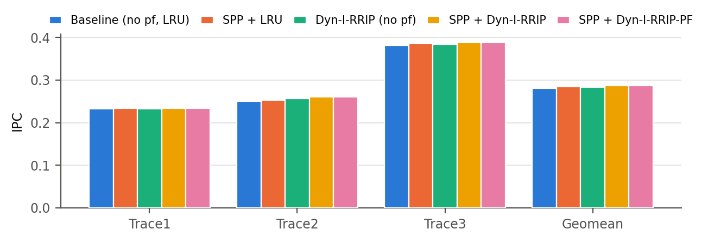
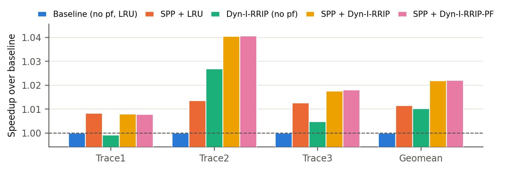
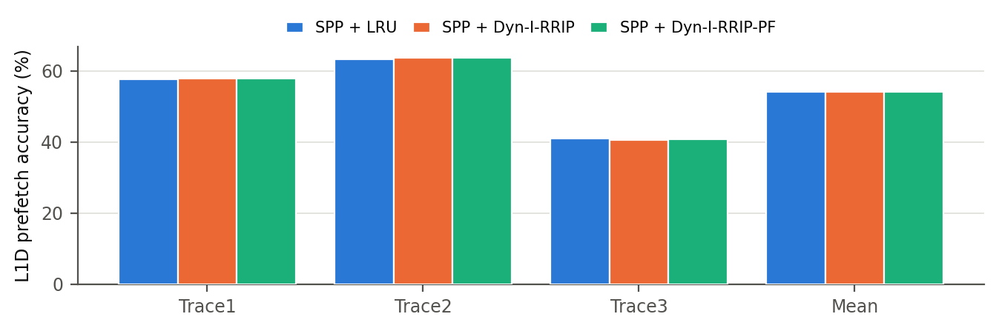
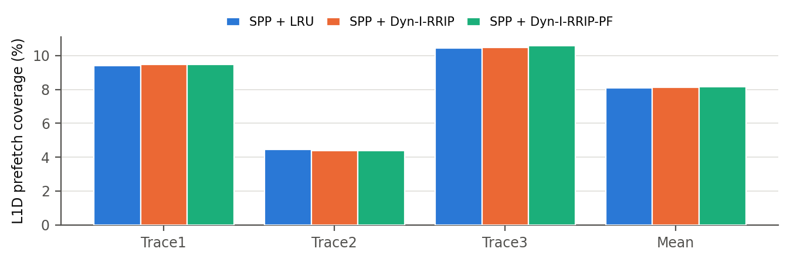
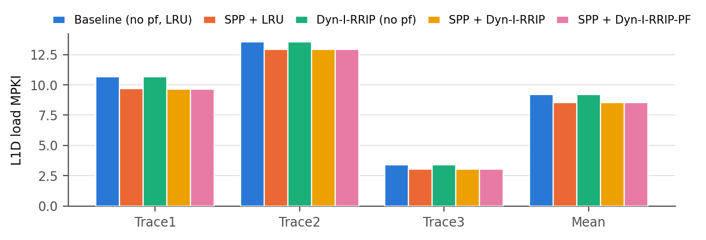
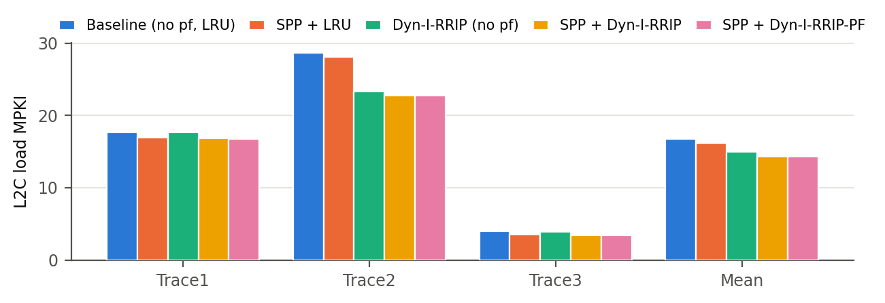
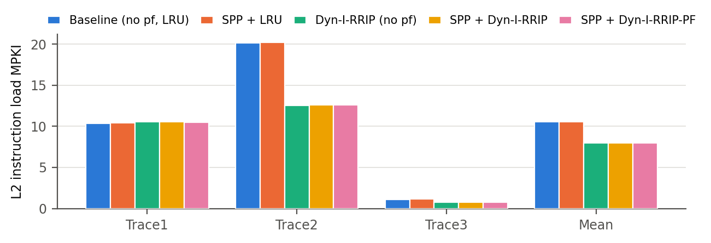
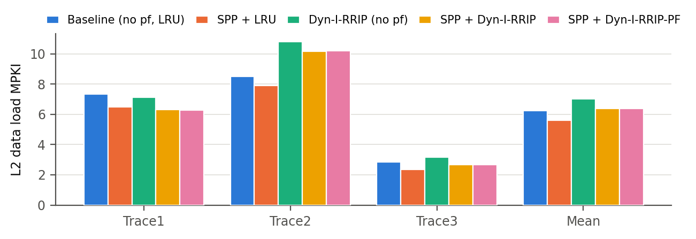
Outcome. SPP + prefetch-aware Dyn-I-RRIP reaches a geometric-mean speedup of +2.21%, against +1.15% for standalone SPP (with LRU) and +1.02% for Dyn-I-RRIP without prefetching, so it outperforms both. Per trace: Trace1: 1.0079 vs 1.0083 (SPP) and 0.9993 (Dyn-I-RRIP); Trace2: 1.0406 vs 1.0135 (SPP) and 1.0268 (Dyn-I-RRIP); Trace3: 1.0180 vs 1.0126 (SPP) and 1.0048 (Dyn-I-RRIP). The two mechanisms attack different misses and add up: SPP removes L1D data misses (coverage 8.1%, L1D load MPKI 9.21 → 8.55), and Dyn-I-RRIP removes L2 instruction misses (mean 10.58 → 7.94), which SPP cannot touch. On Trace1, where the duel keeps SRRIP, the result stays within 0.04% of SPP + LRU; the L2 policy has almost no effect on that trace (LRU and SRRIP differ by 0.04% there as well).
SPP accuracy and coverage are the same with every L2 policy (accuracy 54.0% vs 54.1%, coverage 8.10% vs 8.15% for SPP + LRU vs the submitted combination): the L2 policy does not change what SPP predicts, only how long the L2 keeps the lines.